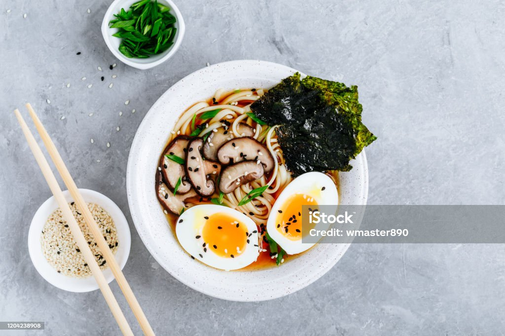
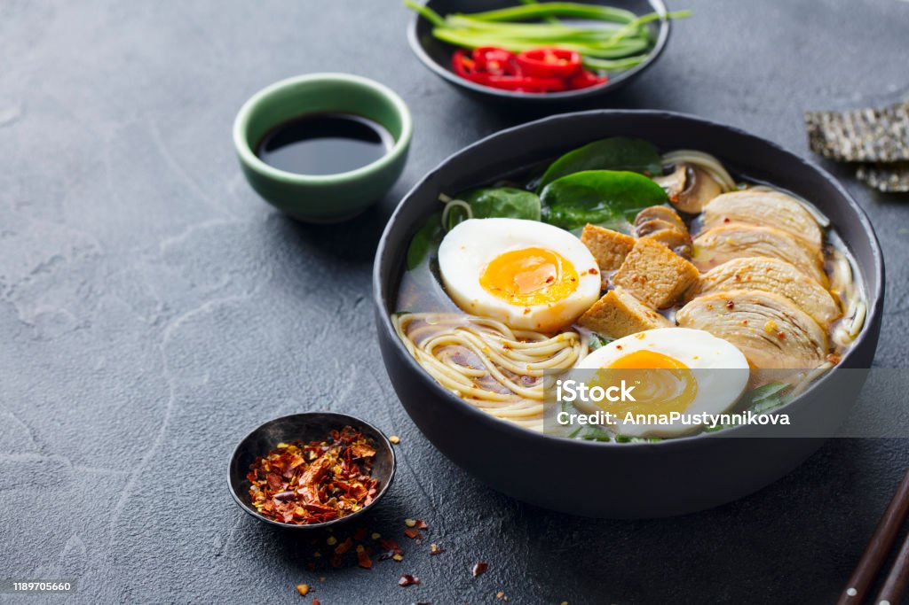

Discover the Art of Ramen
Ramen is a Japanese dish that consists of Chinese-style wheat noodles served in a meat or fish-based broth. It is often flavored with soy sauce or miso and topped with ingredients such as sliced pork, seaweed, green onions, and a soft-boiled egg. This is my go-to meal because it's packed with a variety of flavors and can become a balanced meal when served with vegetables and your choice of protein.
Ramen
